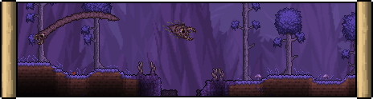
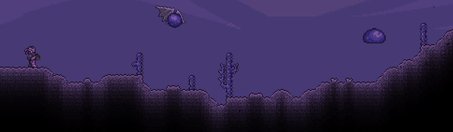
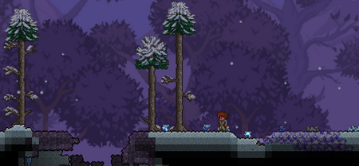

The Corruption is an evil biome with a dark purple wasteland, death, and decay theme, with an evil forest design to it, in contrast to the red gore theme of its counterpart, The Crimson. Every world will contain one of the two, generated randomly (each with a 50% chance of occurring) or chosen by the player upon world creation. Both contain similar hazards and feature their own unique enemies, items, and blocks. The tools, weapons, and armor obtained via Corruption materials are generally faster, but slightly less powerful than those obtained via Crimson materials. Corruption enemies tend to have slightly lower stats, such as health, defense, and damage.
The Corruption surface contains purple Corrupt grass, Corrupt Trees, and Vile Mushrooms. Purple thorny bushes grow on the grass and will damage the player when touched. Water in the Corruption is also purple. The Corruption also contains multiple chasms, underground extensions of the biome. Chasms lead downwards in a straight line, some crossing a horizontal connector, ending with a Shadow Orb. Demon Altars generally line the chasm's passages, appearing inside and around it. Chasms consist of Ebonstone, which can be blown up by explosives, mined with a Nightmare/Deathbringer Pickaxe or higher, or purified to Stone by using Purification Powder, the Clentaminator, and the Terraformer.
The Corruption spreads, meaning it slowly converts adjacent tiles to their Corruption variants. See below for details. Chasms, Demon Altars, and Shadow Orbs will only appear upon world generation, and will not spawn in a Corruption area that has formed through spreading. For an area to be considered a Corruption biome, at least 300 tiles of Corrupt grass or Corruption blocks must be present.
The Corruption spreads itself, similar to The Crimson and The Hallow. This means that it slowly converts certain susceptible tiles that are in the vicinity of existing Corrupt blocks. While its spreading capabilities are very limited during pre-Hardmode, it spreads much faster and more aggressively after defeating the Wall of Flesh. Defeating Plantera for the first time reduces the speed of the Corruption's spread by 50%.

In Hardmode, Corruption spreads through Deserts, transforming them into Corrupted Deserts

Like the Corrupted Desert, Corrupt Snow biomes are created when Corruption spreads into a Snow biome during Hardmode. Snow Block is not convertible, but Ice Block can be converted into Purple Ice Block. Purple Ice can be created during generation if a Corruption biome overlaps a Snow biome, but it will not spread until Hardmode